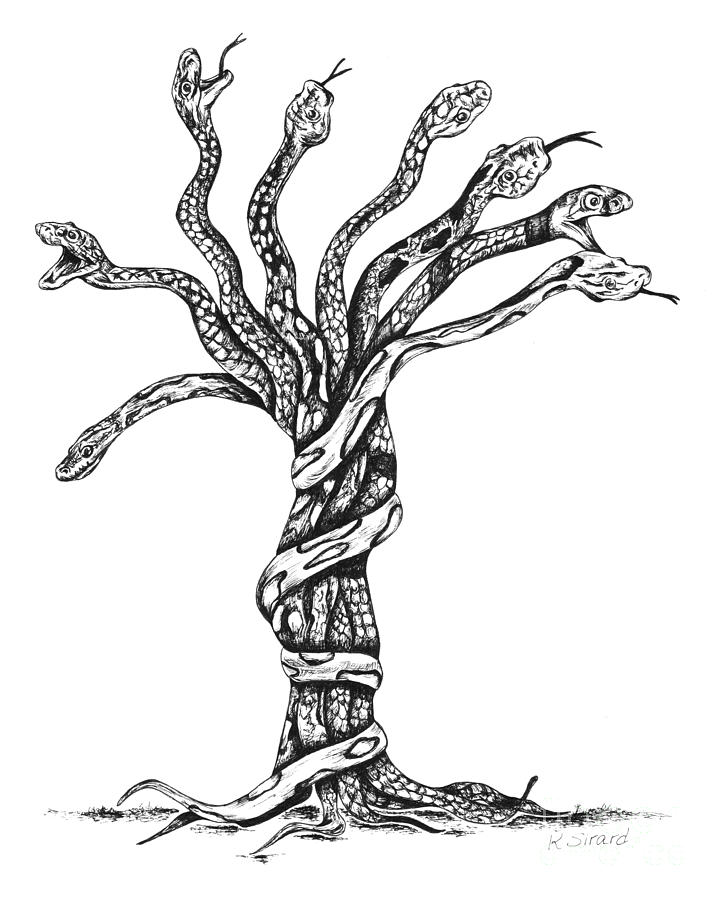

Once upon a time,
the dwarves, who had long served as the King's Own Guard, decided to take the kingdom from their human masters. YOU are thrust into action as...
Welcome, .
To start the game, click the button on the book...
You have done well to make it this far. Now it is time to choose a new hero.BEHOLD!

Harold
Abandoned by man and god, Harold suffers from long-term unemployment and now spends his days and nights at the bottom of a whiskey bottle. He was a boxing champion in his teens. Still, he is ready to save his home--a home that turned its back on him--from the invading dwarven horde. Even if they do sort of have a point. He has spent the evening telling everyone someone stole his wallet, hoping they might buy him a drink.

Gogol The Immense
Allegedly ageless, Gogol the Immense is ironically not that tall. The average height of any normal adult, he just hit his growth spurt early in his youth, untold (perhaps) millenia ago, and was given the nickname by his classmates. Also, he's is (probably) an awesome and terrible wizard, who has (maybe) seen kingdoms rise and fall from his magical abode high atop Mount Awful. He has descended from his magical throne to see what all the ruckus is about.

“Look, father! What's that dark cloud over there? It's not the storm, is it?”
Looking over the backs of the four horses that pull your cart, your father squints, then says, “Riders. Lots of them and coming fast.”
“Are they bandits, Paul?” asks your mother fearfully, clutching her shawl to her throat.
“No, Martha. They can't be bandits. The Dwarven Guard cleaned up the last of them then years ago. I don't know
who they are, but the way they're riding we'll soon find out.
"Son, grab that puppy of yours and get under cover in that pile of bedclothes.”
“But I want to stay here. If there's trouble, I can help too.”
“Do as your father says,” snaps your mother. “And don't come out till we say it's safe.”
You know better than to argue with your mother, so you get off the narrow wooden seat and wriggle through the
crowded cart. “Well, no one said I couldn't watch,” you whisper to Woofy, who licks your face in reply.
Snuggling down into the pile of blankets, you quiet the puppy, who thinks you're trying to play. Then
you arrange the blankets so that you can see. Soon, a faint rumble becomes the drumming thunder of
horses' hoofs.
“Hold your team!” demands a harsh voice.
“Oh, Paul! It's the Guard!” cries your mother. “Thank heavens, we're safe.”
Pulling the team to a complete stop, your father calls, “Ho! Guard! What
is your business with us? We are anxious to camp before the storm breaks. Speak, and let us be on our
way.”
“Do you dare to speak so to the King's Guard?” snarls a menacing voice.
“Teach the humans tobe polite!” urges another of the uniformed dwarves.
Your mother clings to your father's arm. Train begins to fall. All around you are the sounds of horses. Saddle leather creaks beneath the weight of the armored Dwarven Guard, and you feel the presence of unseen riders closing in.
“Now, now, lads. Is this any way to speak to those we have vowed to protect?” asks a honeyed voice. “Come, let us not be
hasty. Let's find out how the situation lies. After all, lads, we wouldn't want to make a mistake now,
would we?”
There is a long moment of silence. Then a few voices mutter, “Sneed's right.”
“Well, then. There we all are. Nice and pleasant,” says Sneed. “Surely, all a mistake. But these are lads with quick
tempers, so please humor us by answering a few questions.”
“I'm sure we've done no wrong,” says your mother. “What do you want to know?”
“Just a few questions, “says Sneed. “Like where you've been
and where you're going.”
“Why, Captain, we're going to the prince's coronation, of course. And as to
where we've been, we've been mapping. My husband is the royal mapmaker.”
“Royal mapmaker, eh? Splendid occupation. So useful. And are you traveling alone?”
Your father answers quickly, “Yes, Captain, quite alone. Just me and the missus.”
“All by yourselves. Splendid, just splendid,” Sneed beams. “You see, lads, what comes of talking first? Now we know who these fine people are. Avoid mistakes, I always say. Now we know they are alone. Seize them!”
Before your father can protest, heavy hands pull him and your mother from the cart. Your mother screams and your father curses, but
rough laughter drowns out their cries.
“You see, lads. It is as I told you. Who would suspect the king's
own Dwarven Guard of treachery? No one, until it's far too late. Soon, all that is owed to us for long
years of protecting humans will be ours. Now, tie these two up. We'll take them back to the caves. A
mapmaker will be useful to our new kingdom. Soon we will launch our attack, With the prince in our
hands, the kingdom is ours! Drive the wagon into the rocks and search it for gold and maps. Then burn
it!”
You've been told stories of heroes protecting the defenseless. Powerful knights fighting goblins, their armor gleaming. You look down at Woofy and your tattered shirt, then out at the ringmail armor covering the Dwarven rebels. Anger broils as you see your mother's arm twisted as she cries out in pain, but you feel Woofy's breath on your arm and it gives you pause. You can...

You're frozen in indecision, but time is running out. You see two dwarves approaching, their heavy armor clanging with each step. You can...

You sneak away through the tall grass, taking refuge behind a boulder protruding from the ground. From there, you watch as the dwarves burn your family wagon, and most of your worldly possessions. It's time to make a decision.
You went after the dwarves and were captured. Being honest with yourself, as you sit in the mud, bound in chains, you aren't sure what else you expected. But providence reveals itself to you as you meet an old dwarf who wants your help. The rebels are no friend of his; they are just as keen to punish his clan as the humans. He says he is eager to see them get their comeuppance, and he is recruiting children to do the work for him.
The elder dwarf explains, there's only one way out of the prison, and that's if he gives you the key. But keys aren't cheap - this one, for example, is made out of iron, and even though iron is the cheapest and most accessible metal, metalworking is still a prized profession. Anyway, if you want to be free, you need to help him with a dangerous mission that would normally be assigned to an adult who specializes in this kind of thing.
You've never heard the word apprehension, but you know how it feels. You must trick a guard into giving you a second (actual) key (not made of wood), to unlock a supposedly mad dwarf named Bork. Once Bork is free, the three of you will rescue your parents. At least this will get you an actual key to your shackles. You walk up to the guard, and...
If only you'd read more books, like your mother always wanted. The guard listens to your tail, and flicks you in the ear repeatedly until you retreat back to your corner.
It really stings.
You attack the dwarf guard, but he punches your entire face with his giant fist. As your body stiffens like a board, and you fall backwards, you begin to think that perhaps you should have been a scholar like your mother wanted.

Sitting in your jail cell, you slump down and fall limp with your hands on your knees. The shackles fall off your adolescent hands, and you stare blankly at the huge, chunky circles of iron sitting on the floor, your hands completely free.
"Son of a...!" the old dwarf begins, but you thrust your hands back into the shackles, screaming for help.
"What's all the racket?" the dwarf guard mumbles.
"My shackles are cutting into my wrists," you answer, tears welling up in your eyes.
The guard grunts and walks over, checking them. "I don't see..."
The heavy thud of the stone hitting the back of the guard's head makes you feel a little sick as he slumps down, the old dwarf stands tall, dusting his hands.
"Maybe I underestimated you," he says with a wink, picking the key off the guard. He starts to unlock your shackles, then chuckles to himself and moves on. "You're free, of course, and welcome to join us. There's much to do with these wee cotters before they get their mittens on the prince."

They understand your hesitance, and Bilk respects your bravery in the prison. They take you to your parents, who are together, chained in the corner. As you approach, they both cry out in joy, but soon both grow somber. Bilk explains the role the Boulderbenders will play in the coming fight, and how valuable you might be as a human, when the time comes to form alliances. Your father understands, and encourages you to go with them, but your mother weeps and rends her cloak, falling forward begging you to not put yourself in even more danger.
The three of you set out toward the edge of the camp. Bork lets out a wild, piercing whistle and you are soon met by a gigantic bore with blue paint on its face, and sticks and small bones hanging off around its neck. He leaps up on its back, offering you his hand, as Bilk struggles up its hindquarters into a seated position.
Taking Bork's hand, you're thrown up onto the giant beast's back, and it takes off at a speed that neary throws you off into the air, only held in place by Bilk. The dire expression on his face tells you everything, and you look back to see the two guards on horseback pursuing you.
As Bork notices, he straights and turns. He says he will stop them, and that you should continue on to the city to warn the prince.
Bork lets out a mighty howl and leaps off the bore, startling the two guards pursuing you. You wonder briefly, but only briefly, how Bork was ever captured in the first place. Both guards are dismounted and unconscious on the ground before you fully appreciate what's happening. You think it must have taken a dozen dwarves to subdue Bork in the first place.
Bork nods, and clicks his tongue. The war-bore begins running even faster, outpacing the guards in pursuit. A minute passes, and if they're still behind you, they're completely enveloped by the dust kicked up by the bore as it ran.
After a hard night's ride on the armored bore, you are sore and ready to walk. You three approach the city gate, but it is closed until morning. You shout for the guard, but are ignored. Bork prepares to whistle again, but you cover your ears and ask him kindly not to. There are only two obvious choices. You decide to...
The three of you set off to find a new way into the city. You wonder briefly if there are other ways inside, why they bother having a gate in the first place, but just follow Bilk and Bork Boulderbender as you begin to lap around the city. Eventually, you come to an enormous pipe, and you realize why no one sneaks into the city this way. Sewage slowly sloughs out into a ditch, toward a water way to carry it away from the city. For a moment, the dwarven invasion sounds fine. Isn't there any other way? Listening, you hear running water, and in the moonlight you can see an open space, but it's too dark to see what's there.
You wade through the blackness, into the blackness chasing the sound of running water Bork and Bilk bark after you to stop, but you've already headed off into the empty space. Walking and walking, soon you are falling in the blackness. Before you land, you think of your parents one last time.
The sewage pipe leads you directly under the castle, and you think you will never be the same. Something inside has changed, how you see the world, how you relate to others. The stench will never leave, no matter how many times you bathe, no matter what you do. You're certain. Despite that, you hear a shriek of pain that somehow expresses what your heart feels, wading knee-deep through waste, and you peer through a small exit pipe, too small to climb through. The prince is there, surrounded by the rebel dwarves, and they are, one by one, pelting the boy with small stones.
A ruined pair of britches doesn't change what's right and wrong. You wave for Bork, and whisper in his ear. The dwarf smiles, and the two of you take a breath at the same time, then together scream, "STOP THROWING ROCKS!"
In the throne room, the rock throwing stops. One dwarf whimpers, and mutters about being cursed. He begins to cry.
you decide to warn the prince yourself and meet a fairy named whimsy
you go with the fairy and see two dwarves
you let whismy take care of the dwarves and follow her and meet a druid
you let whimsy shrink you and you see a witch

you take whimsy's advice and not go with the witch. you continue on but she wants to sleep in a spider den
Better go find some adults, who will act selflessly and assist you with the power of altruism. Instead, you encounter a boy your age, who somehow possesses a raft and is equally as confident in his ability to solve deep-seated, decades-long political unrest and social distress, bubbling up to the surface in the form of war. A solution is clearly in sight, if you can trust him. He wants to use his raft to reach the city
You go with Sandy on his raft. While on the river you run into a sleeping dragon
This is silly, you decide to turn Around and say good bye to Sandy and look for the dwarves
You decide go slip past the dragon and make it!
You carry the raft around the dragon and make it!
you're past the dragon (strangled by snakes) ....After an afternoon of you two hauling a raft around on land and contemplating how that's exactly opposite of how rafts are supposed to work, you and Sandy are finally out of the enormous dragon's sight. You find a bend in the river to put the raft back into water, secure it with some rope, and set up camp. That night, as you sleep, you feel a tickle in your ear. Waking up, you find yourself covered in snakes longer than your pa is tall. Dang.
you fall into the river and get away from the snakes!
you roll into the fire and burn those snakes off of you!

You dive into the river, and almost drown finding your
way back to shore. The snake released you, but you bumped your head on a rock, and feel
a little funny. That was terrible. Just as you begin to wonder if your misery is a
device of your own making, a new, small noise catches your ear. Sandy comes running up with
a burning branch and one singed eyebrow. He chased off the rest of the snakes with a
burning branch. For a moment, you wish you had thought of that. You ask him if he can hear
a peculiar chittering, but he doesn't hear it. Maybe it's your imagination after a snake
tongue tickled your eardrum a few minutes ago.
Nope! It's swamp rats, absolutely everywhere.
The water carries you down again, the swamp rats clawing
and gnawing at you in a panic. They're tossed away in the current, as you bounce off large
stones, stronger than the current. You knew if you went to the well too many times, it
would come back to bite you. Going to the well too many times, and the swamp rats, both.
Minutes
later, you wash up on shore, sore and winded, but alive. A few minutes more pass before a
one-eyebrowed Sandy drifts up in his raft. You climb on just in time to see a mass of white fur
in the water, as the swamp rats have gathered together to better float toward you. Taking a loose
branch, you help Sandy push off as fast as you can, and soon the white mass of fur in the water
grows smaller and smaller, and is soon a distant memory.
But ahead, you hear the roar of a waterfall,
and you rue this relentless, cursed life.!
You jump left into the waterfall, as it seems the least terrible option.
You jump right, thinking you might be going down the wq
Despite your best judgment, fear of the waterfall
drives you to the island. Crashing your raft into the point, you and Sandy clamber
up onto the slick-stone shore. No sooner do you gain your footing than the entire island
lurches to the side, knocking you over. Ahead of you, an enormous head rises up out of the
water and turns to you, its enormous eyes peering down at you. The island begins to look
more like a shell by the moment, as its enormous beak clacks and it lets out a shriek that
sends you rolling backwards.
You scream for Sandy to run for it, and the two of you dive
back on your raft, landing in the rapids just as the monster disappears from view. Moments pass
before it rises back up, facing you this time, you raft drifting closer and closer to the
waterfall.
you are barely alive and nearly drowned but you got captured by lizardmen! they want to help trust or no trust?
Perhaps the worst idea you could have had, being ten years old, untrained, and unqualified. A kick here, a punch there, and you have thoroughly lost, and also lost the chance to rescue your parents. You go straight to jail, where you're bound up and held hostage until the siege of the caste is over.
THE END.

The dwarf looks you up and down for a moment and snorts, noting you couldn't have done it anyway. Further attempts to get his attention fail, and he ignores everything you say, and all your taunts, until the guard threatens you into silence. You sit quietly, trapped in jail with iron shackles nearly too heavy to lift, wondering how you can save your parents.
THE END.
The dwarf complains about kids only caring about money these days and turns his back on you. After several attempts to get his attention, you hear snoring. You scream at him to wake up, but he doesn't respond. The guard shouts at you to quiet down and you hear the sword unsheathe, prompting you to comply. You sit quietly, trapped in jail with iron shackles nearly too heavy to lift, wondering how you can save your parents.
THE END.
That went surprisingly well. You watch Bork, armed with two axes from the guards, dispatch a dozen dwarven guards. Thanks entirely to him, you make your way to Sneed.
Perhaps unshockingly, Sneed gives up the minute he sees his soldiers are nowhere to be seen, surrendering to Bork, and in turn the army that arrives moments later.
You are praised and thanked, the Boulderbender clan raising a banner to your name in their mountain lair. The prince, as thanks for your bravery, replaces your family's wagon and horse, for your journey home.
As much as you want to, you cannot leave your mother in tears.
“Well, maybe it will be all right. Maybe the boulder benders will be able to warn the prince in time,” you say with a sigh.
“It’s not our fight, Galen. Don’t get involved,” says your mother. “Maybe you’re right,” you say and grasping your mother’s hand, you lead her out into the dark corridor After long hours of bumbling about in the dark, you find yourself outside, standing on top of the iron-red cliffs.
Below you, the dwarves army returns victorious.
Years later, as apprentice mapmaker to Sneed the Supreme, you wonder for the millionth time if you made a mistake in not going with Bork and Hume. If so, perhaps you will get a chance to correct that mistake. You have been contacted by Bork the Second, and you have agreed to help overthrow the evil Sneed. This time you will succeed.
Pulling the horses into the trees at the edge of the road, you hide and wait until thundering hoofs and booming war drums announce Sneed’s arrival.
“Open the gates!” roars Sneed.
“Go away! It’s not the time!” yells the guard.
“Open the gate or it will be past time for your head to rest on your neck,” snarls Sneed.
There is a moment’s silence, and then the guard says in a tiny voice, “Oh, maybe it is time after all. I think I see the sun coming up now.” The large wooden gates creak open, and Sneed and his men thunder through into the sleeping city.
As soon as the last Dwarf passes through the gates, the three of you mount your horses and follow them. The gate guard glowers own at you and mutters angrily to himself.
As you creep through the empty city streets, you hear the army roar, “Sneed! Sneed! Sneed! Long live Sneed the Supreme!”
Suddenly there is a clatter of hoofs and three horses dash by you. Ties to the saddle of one of the horses ia boy no older than yourself. A small crown rests crookedly on his head and tears streak his cheeks. For one short moment, the boy looks into your eyes—his look filled with despair—and then he is gone.
Just then, a small bent figure walks by the alley where you are hiding. He rubs his thin hands together and chuckles to himself, “At last, the king is dead, his son captured, soon to be in a dwarves cell, and those meddlesome Boulderbenders out of the way. Now all I have to do is let Sneed rule for a little while. When the time is right, I’ll slip a poison mushroom into the stew. Then it’s King Snively! No more ‘Yes, sir. No, sir’ ever again.”
“Not if I can help it,” you say, leaping out of the alley. Before Snively can say another word, you bang him on top of the head with a large rock and he falls to the ground with a thud. You drag him into the alley, search his pockets, and discover a large ring of keys.
“Bork, do you recognize these keys?”
“Of course. They’re the keys to the dungeon cells,” answers Bork.
“I thought he’d have them,” you say. “Help me tie him up. I think we should ride back to the caves, rescue the prince and my parents from the prisons, and throw Snively into the deepest dungeon.”
“It will also give me a chance to talk to my warriors. Once they know I am free, they will revolt. By morning Iron Mountain will be ours and your parents and the prince will be free and safe.”
Happily, you turn and ride toward the caves in the mountains.
THE END.
Cautiously you edge into the left-hand tunnel. The sound of rushing water grows louder. You are trying to move with care when suddenly your hands slip on a patch of slick moss. You fee yourself beginning to slide. All at once, the pipe ends and you drop through cold, dark space. Splash! You plunge deep into switftly flowing icy water that seizes you in its powerful current and whirls you away.
You have fallen into the great underground river that flows beneath the city.
you are pushed along by the fierce current and deposited, bruised and battered, on the banks of he river as it surfaces miles beyond the walls of the city.
You crawl up into the muddy bank. You lie there panting and trying to think. You could walk back to the city and maybe still help. You could also try to walk back to the caves and free your parents while most of the dwarves are gone. But either way, you realize, you are probably too late to save the prince.
THE END.
"CURSED! CURSED!" you and Bork scream at the top of your lungs, the inhuman voice echoing through the chamber. "CURSED DWARVES, FOR GENERATIONS ON GENERATIONS!"
Several of the rebel dwarves are crying now. For the first time since you met him, Bilk looks genuinely pleased.
"CURSES UPON YOU, DECEIVERS AND REBELS! HAUNTED, YOU'LL BE! BY GHOSTS, AND YOUR OWN SELFISH DEEDS!"
You fall silent for a minute as Bork takes another deep breath, but you tap him on the shoulder to wait. In the quiet, you hear steps now. Heavy, dwarven armor heading for the doors. Running, clamboring, tripping, scrambling for the doors, faster and faster, screaming and shrieking as they make their way out.
Once the room is clear, you call for the prince, whose sobbing subsides as he wanders over to the grate where you're looking out.
"By the gods, a boy? A boy almost my age!"
"And two Boulderbender dwarves, who remain loyal to you, my Lord."
You are allowed to explain the situation, from beginning to end. The prince nods and listens, taking you at your word, after saving him. He gets you cleaned up, and before dawn the army has caught and subdued Sneed, and all of his royal guard. By breakfast, your parents are returned to you, fed well, and given a new wagon and horse for the travel home, with thanks.
“Help! Help! Get me out of here. I’m down in the storm drain,” you cry.
After a moment, an ugly dwarf face squints down at you.
“It’s just some dumb kid, and a dog. Got themselves stuck in the drain,” says the dwarf., and soon the battle rages on again. You try to get someone to help, but no one listens. After a long time, all is silent.
You hear steps in the silence, then a bearded face peers through the grade. It’s Sneed!
“Ah, there you are. I must admit, it’s grand seeing you behind bars. I want you to know I’m going to do my best to keep things that way, now that I’m king.”
THE END.
You attack the dwarves. You're too small. They squished you. THE END YOU LOSE
Druid turns you into a tree. THE END YOU LOSE
You run away and nobody belives you. THE END YOU LOSE
The witch eats you. THE END YOU LOSE
The fairy thanks you for trusting her. She helps you solve the problem. THE END YOU WIN
You catch a cold and crippled. THE END YOU LOSE
You sharpen the raft's oar to a brutal point and sneak up on the slumbering beast. It does not occur to you what sort of creature might sleep out in the open, totally alone and unguarded. Letting out a primal, ten-year-old scream, you charge with your makeshift spear. It shatters on contact, splintering into pieces against the armor scales of the beast. You have only a moment to think before it twitches in its sleep, the impact sending you across the width of the river, landing in the silt and mud of the riverbank. As you slowly lose consciousness, you consider that, perhaps, that was a terrible idea and you've thrown away your one chance to save your parents, and your country, from the impending dwarf attack.
THE END.
A sweet aroma emits from the snakes. As you feel them crawling and tightening around you, a sense of euphoria replaces any fear you should have. Soon, a sweet slumber falls, and then nothing.
THE END.
Leaping into the river, the rats only swarm more ravenously. As water begins to swallow you, you feel the rats gnawing and clawing at you. You think of your parents one last time as you feel the cold river begin to sweep your weakening body away.
You scream with a bravery you could never have imagined, the day before, and the monster pauses for a moment. It looks at you, quietly clicking its beak, studying you, deciding if it's worth fighting. Perhaps you are small, but also mighty. You scream again, and this time the monster rears back and lets out a cry that nearly deafens you. You cover your ears as the blast from the monster nearly lifts you off your feet, almost making you slip from the raft. But then, in a single motion, the snapping turtle lunges, and the two of you hardly have a moment to contemplate what awaits before disappearing into the black void of its maw, raft and all.
THE END.
You accept the lizardmen's help, their king leading a charge on the dwarves. The dwarven rebels were clearly unprepared for such an overwhelming reptilian force, you almost feel bad as the dwarves are either annihilated or sent running into exile in the outer rim of the kingdom, where they will compete with wild animals for food for the rest of their lives.
You take this opportunity to sneak away to find your parents still kept tied up in the cellar of the local tavern. You free them and urge them to escape quickly before the lizard king asks you to introduce him to the prince.
The lizard king has no tolerance for racists. His people have long been denounced as savage beasts, and his promise to his people to uplift them and raise them to equality with the human kingdoms leaves no room for a bigot to judge him by the tint of his scales. You are cast out, without hope of stopping the dwarven rebellion.
An ear-piercing clang of metal on metal wakes you from his stupor. An empty whiskey bottle falls off the table with a thud as you startle awake. You can hear the roar and screams of a battle outside, and know it is time to take action. Things have not been so good lately, the past ten years or so, but that's no excuse. It's time to be a hero.
Staggering to your feet, you pulls both suspenders up, securing your trousers. One of the buttons securing the strap on the right shoulder pops off, sending the that suspender dangling down by your leg. But there is no time for that now! There's no time for anything except saving the town you love.
...Okay, perhaps not loves. Perhaps love is a strong word, but...
No! There's no time for this. You charge out the front door where you find...nothing. The battle has already moved on and left him behind. Maybe it's for the best, you think. You aren't really cut out for being a hero, or you probably would have already been one. Besides, you're a little past your prime, don't have any weapons, no training, you're by yourself...
But the heroism you felt a moment ago surges back as a fire rises up in the distance. Off you stumble, toward the action!
To be fair, someone in town should have to put up a sign saying the stones on the bridge are wet. The suspender you lost earlier now wraps around your leg, tripping you, and over the side you go, slowly drifting down river with the current. You watch as city drifts by, with no obvious way to get out. Eventually, you drift out of the city entirely, and by then you're growing used to the river. The temperature isn't bad, after all. As the city drifts away, you think about how this might be for the best anyway.
Maybe you can find somewhere to finish your nap.
THE END.
As an ancient wizard, great and powerful, you are often asked why you allow wars to continue. As someone of great strength, isn't it your obligation to offer protection to the helpless, to prevent famine and pestilence, to feed the starving and warm the cold?
But no one ever asks how your knees feel, or wonder how long it takes to walk down that mountain path from your magical fortress. Your poor, enchanted pack mule, Eldemere, is almost five hundred years old, for goodness's sake.
But no matter. You've heard word of the terrible goings-on in the lands below your magical fortress. Perhaps it's been too long since you visited civilization.
You make your way out of Mount Awful's foothills into the flatlands, where you can already hear the clashing of small swords in petty squabbles. The sun is high above, near it's zenith. You begin walking, and by the time you reach the town of Bilderberry, you realize you haven't eaten since breakfast. Making your way into the town, you stop by the Inn, seeking a small snack. Vegetable stew, perhaps.
"Greetings, young man. I have an old ass in need of feeding. And my mule outside is hungry, too," you say with a chuckle. The Innkeeper stares at you blankly. "Quite famished," you offer with a smile.
"I beg your patience, good sir. We are in the beginnings of a siege, and our facilities are stretched beyond their normal capacities."
A siege? You think back to the thoudsands of armored dwarves surrounding the city, as you approached Bilderberry. Perhaps this is the sort of thing people always complain about, you think, as you sigh.
Walking back outside, you leave Eldemere with the stable boy, and make your way back out the city gate to the forces preparing to attack.
"Excuse me," you say, tapping a dwarf on his armored pauldron. "I'd like to speak to your leader, please." You're met with a sneer you very much do not appreciate, and insist again that you speak to whoever calls themself captain of this regiment.
"I am these good dwarves leader. I am called Sneed, and we are here to-"
"Very good. Do you intend to put this town under siege, and then attack them?"
"We do," Sneed answers with narrowing eyes. "Perhaps you should make haste away from the castle, good si-"
Silece falls over the camp as Sneed disappears from view. Looking down, you look at a frog witting amongst Sneed's previously-occupied plate armor. A dozen men pick up swords, and step toward you. They too disappear, as a quiet chorus of ribbits fill the camp. A dozen frogs begin hopping around, free of their armor.
"Is that all?" you ask pleasantly, looking around at the pale-faced dwarves, glancing from you to the frogs hopping to and fro, then to you again. "I'll take that as a yes."
There is no movement from the camp until you say, "Perhaps it's time everyone heads home?" and are met with an enthusiastic rush from thousands of dwarves all taking what they can carry, and running away on foot.
You walk back into Bilderberry, petting Eldemere the Mule as you pass her by, walking into the Inn. "Young man, I would like some vegetable stew. Quite famished, you see."
THE END.